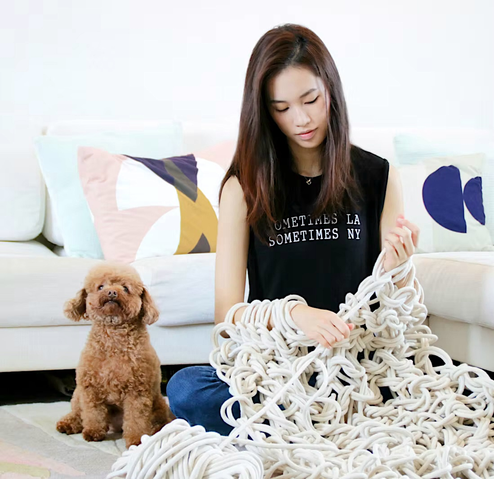
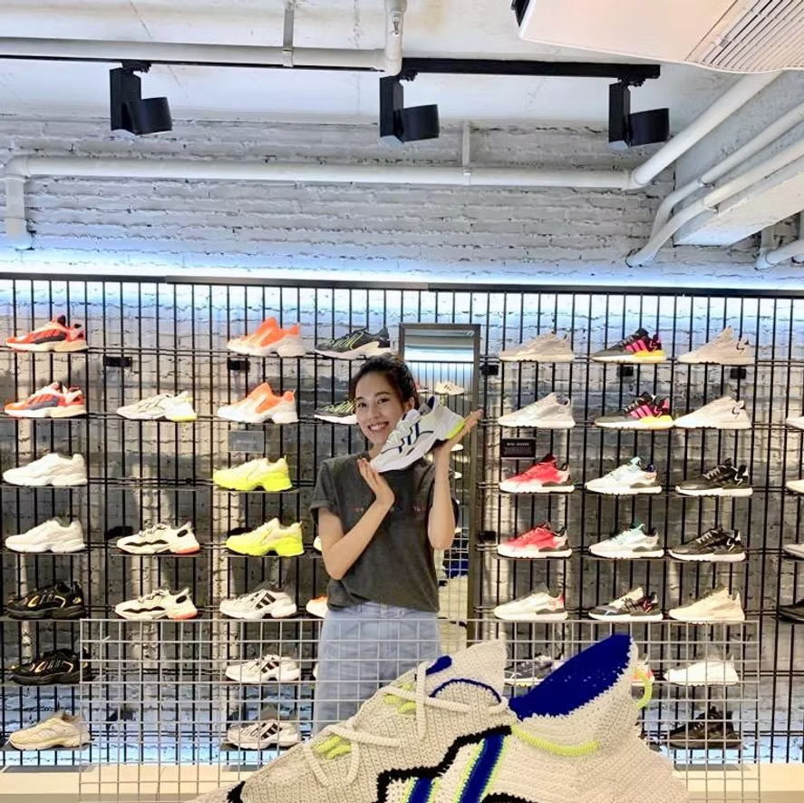
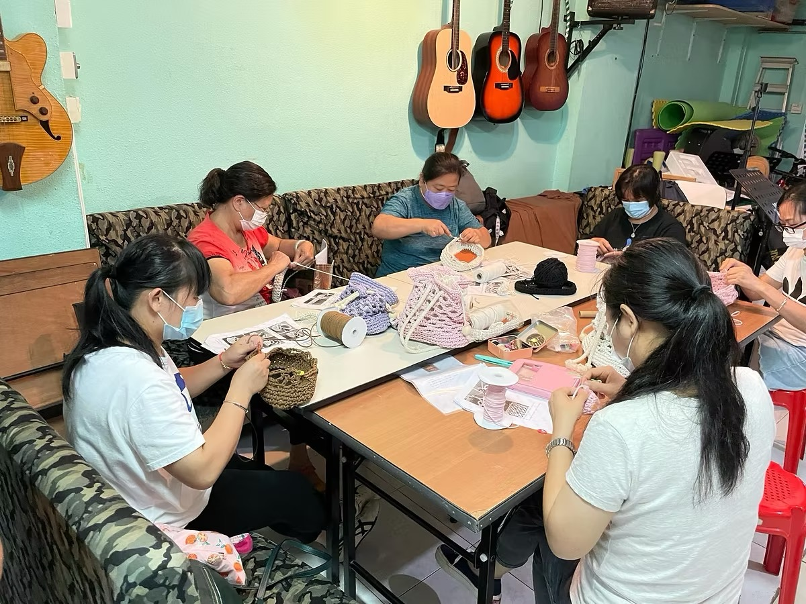
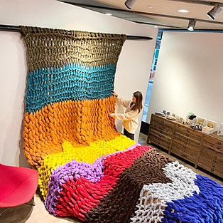

Retail · Installations
Window displays & malls
Annie has built crocheted installations for IFC Mall, Laforet, and IFS Mall in Chongqing — usually large-scale, often for Chinese New Year.

— Annie, founderAnnie trained in Textile Design at Central Saint Martins in London, then spent several years as a visual merchandiser for an international luxury brand — incorporating crochet and knit into window displays as a quiet act of insistence.
In 2017 she opened a Facebook page called The Mint Box Studio to share her own work. Within months people were asking to learn. The page became classes; the classes became a small Sheung Wan studio.
Since then she has taught more than 3,000 students across one-to-one lessons, public workshops, and corporate team-building sessions. The studio remains small on purpose — most workshops cap at four people so nobody is reading over a stranger's shoulder.
Brand commissions, charity work, and a stubborn belief that a learnable craft is worth more than a finished product.
Annie has built crocheted installations for IFC Mall, Laforet, and IFS Mall in Chongqing — usually large-scale, often for Chinese New Year.

Brands · CampaignsCrochet-themed campaigns for Adidas Originals and HSBC's Pink Dot — across social, billboards, and physical art installations.

Charity · SkillsFree crochet workshops for low-income families and single parents in Hong Kong, teaching a skill that can be turned into income.
 Charity · Knit For The Neddy
Charity · Knit For The NeddyHand-knit scarf workshops in support of donated winter clothing for the elderly.

Luxury · StudioOne-off pieces and small-batch commissions for retail and editorial use.
A few of the Hong Kong magazines and papers that have stopped by the studio over the years.
"You don't need to be artistic to crochet. You need an hour, a hook, and a small willingness to undo three rows when something looks wrong. Everyone has those."— Annie Wong